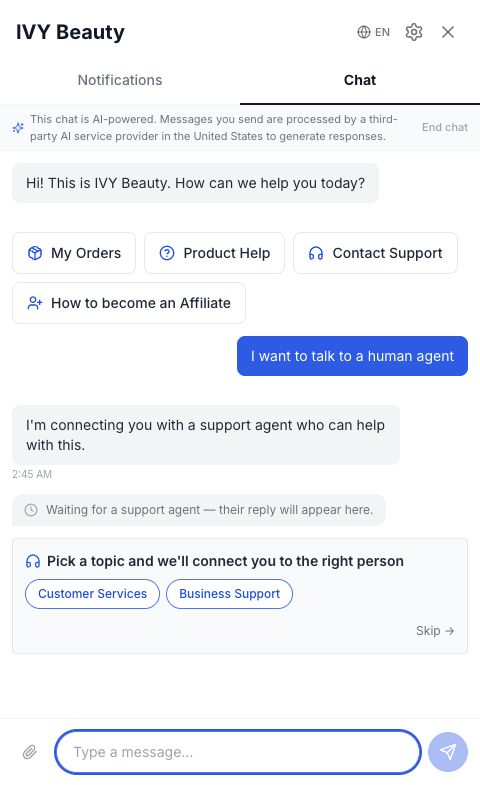
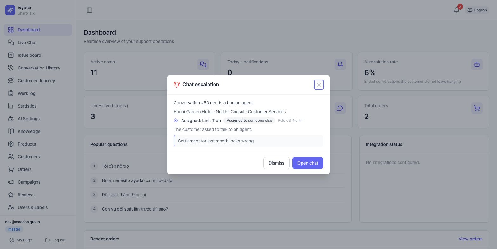
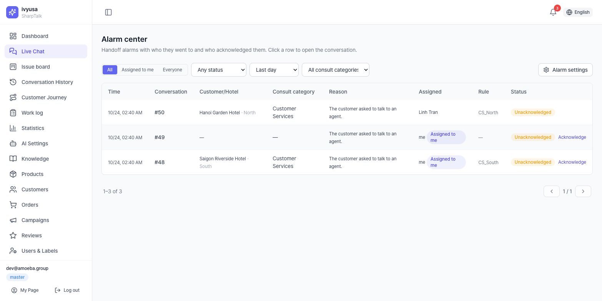
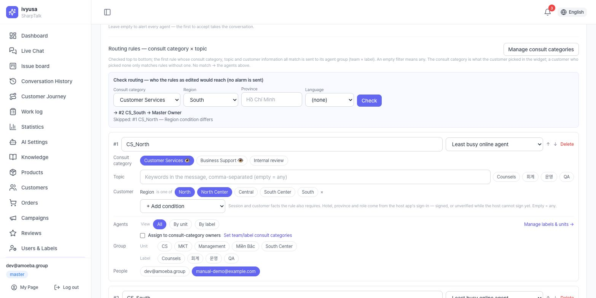
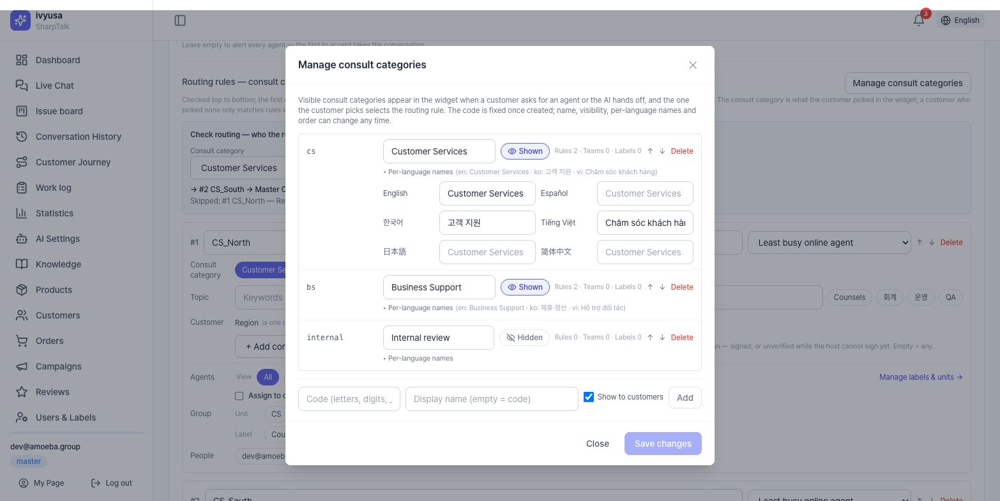

Bắt đầu
1.1 Truy cập bảng điều khiển
- Bảng điều khiển tenant:
https://shoptalk.amoeba.site/user/<slug>— địa chỉ đăng nhập riêng theo từng cửa hàng - Quản trị viên nền tảng:
/admin/login - Tài khoản được mời đăng nhập lần đầu bằng mật khẩu tạm thời rồi qua bước đổi bắt buộc (từ 10 ký tự·3 loại ký tự·cấm mật khẩu phổ biến)
- master/director·quản trị viên hệ thống bị bắt buộc đăng ký MFA (TOTP) — khi đăng ký, 10 mã khôi phục chỉ hiển thị một lần
Toàn bộ quy trình onboarding: Sổ tay thiết lập nhanh chương 1~2.
1.2 Vai trò·quyền hạn (RBAC)
- Cấp bậc: master · director · manager · staff / Nhãn công việc: consult (tư vấn) · accounting (kế toán) · operations (vận hành)
- Hiển thị menu theo 2 tầng: ① menu quản trị viên nền tảng cung cấp cho tenant → ② quyền theo cấp bậc của master tenant + ngoại lệ theo người dùng (thẻ Quyền truy cập menu trong [Cài đặt gian hàng]). Nhập URL trực tiếp cũng bị máy chủ kiểm tra lại và chặn
- Chính sách hiển thị theo chủ sở hữu (ACL) áp dụng bổ sung bên trên quyền chức năng
1.3 Menu bảng điều khiển
Bấm logo ở thanh bên sẽ mở danh sách thẻ các màn hình truy cập được (/menu).
| Menu | Đường dẫn | Công dụng |
|---|---|---|
| Tổng quan | /dashboard | KPI·câu hỏi phổ biến·trạng thái tích hợp |
| Trò chuyện trực tiếp | /live-chat | Tư vấn thời gian thực·xử lý chuyển tiếp |
| Bảng yêu cầu | /issues | Bảng kanban ticket yêu cầu (tenant quy trình native) |
| Lịch sử hội thoại | /history | Tra cứu hội thoại cũ·kiểm tra căn cứ |
| Nhật ký công việc | /work-log | Truy vết kiểm tra thao tác của nhân viên tư vấn |
| Thống kê | /statistics | Phân tích câu hỏi·kênh·nhân viên·kết quả·hài lòng·khung giờ |
| Cài đặt AI | /ai-setting | Agent·persona·quy tắc·kịch bản·hội thoại mặc định·nối công cụ·kiểm duyệt·huấn luyện |
| Kho tri thức | /knowledge | Bảng tri thức (/knowledge/board)·tài liệu·nguồn·kiểm chứng |
| Khách hàng / Đơn hàng / Sản phẩm | /customers /orders /products | Tra cứu·quản lý dữ liệu đệm |
| Chiến dịch / Đánh giá | /campaigns /reviews | Quản lý gửi tin·đánh giá |
| Người dùng | /users | Mời thành viên·cấp bậc·nhãn |
| Cài đặt gian hàng | /settings | 8 tab: Cài đặt cơ bản / Chuyển nhân viên / Cài đặt widget / Tích hợp nền tảng / Marketing & Helpdesk / Kênh nhắn tin / Cài đặt khác / Thông báo quyền riêng tư |
| Trung tâm cảnh báo | /live-chat/alerts | Lịch sử·phân công·xác nhận cảnh báo chuyển tư vấn (🔔 trên header → Xem tất cả) |
| Trang của tôi | /my-page | Hồ sơ·mật khẩu·MFA |
| Quản trị | /admin/* | Quản lý nền tảng (chỉ quản trị viên hệ thống) |
Widget khách hàng
2.1 Bố cục màn hình
- Launcher trên trang cửa hàng (vị trí·kích thước·biểu tượng theo cài đặt chủ đề của tenant) → bảng (toàn màn hình trên di động / thẻ nổi trên desktop)
- Phần đầu: tên hiển thị của cửa hàng (hoặc logo), chuyển ngôn ngữ (6 thứ tiếng en/es/ko/vi/ja/zh — khi chuyển, ngôn ngữ phiên cũng được cập nhật lên máy chủ nên ngôn ngữ trả lời của AI đổi theo), cài đặt (bánh răng), đóng
- Tab: Thông báo / Đơn hàng / Trò chuyện — tab hiển thị·thứ tự·vị trí (trên/dưới) theo cài đặt của tenant. Chỉ còn 1 tab thì thanh tab tự ẩn
2.2 Tab thông báo·đơn hàng
- Chip tab thông báo: Tất cả · Sự kiện / chip tab đơn hàng: Đơn hàng (danh sách đơn) · Giao hàng · Đánh giá · Yêu cầu. Tắt một tab thì các chip của nó được hấp thu vào tab còn lại — tắt tab không làm mất chức năng
- Mỗi mục: biểu tượng·tiêu đề·huy hiệu trạng thái·nội dung·thời gian tương đối·chấm chưa đọc. Mục chưa đọc mới nhất được làm nổi bật
- Chi tiết đơn hàng: sản phẩm·tổng tiền·bậc theo dõi giao hàng·tra cứu vận chuyển·hỏi về đơn này (đưa mã đơn vào chat)·viết đánh giá theo sản phẩm (sao 1~5 + nhận xét)
- Danh sách đơn nội tuyến chỉ hiển thị giai đoạn gần đây — "Xem thêm" dẫn đến trang cá nhân của chính cửa hàng (Cafe24 là danh sách đơn, còn lại là trang tài khoản)
2.3 Tab trò chuyện
- Trên cùng: thông báo tư vấn bằng AI + liên kết kết thúc tư vấn (chỉ khi đang diễn ra)
- Biểu ngữ đồng ý: hiển thị khi vào lần đầu hoặc khi phiên bản thông báo thay đổi — trước khi đồng ý, chức năng cần thông tin cá nhân bị hạn chế
- Nút kịch bản: menu nhanh do tenant cấu hình (mặc định 6 loại). Hỗ trợ sản phẩm mở menu con (cách dùng·thành phần·đổi/trả·hàng về lại). Sau câu trả lời có chip nhanh (đơn của tôi/giao hàng/trả hàng/kết nối nhân viên tư vấn)
- Xác minh danh tính 2 cách: ① đăng nhập cửa hàng — redirect (mặc định)/popup, tự xử lý đường dẫn đăng nhập Cafe24·Shopify, quay lại thì widget tự mở lại ② tra cứu đơn không cần tài khoản — mã đơn+email (giới hạn số lần)
- Đính kèm: ảnh ≤10MB (HEIC tự chuyển đổi) / tệp ≤20MB (pdf·txt·csv·docx·xlsx), tối đa 5 tệp mỗi tin nhắn
- Chọn danh mục tư vấn: nếu có danh mục tư vấn đang hiển thị, khi bấm [Kết nối nhân viên hỗ trợ] sẽ hiện thẻ "Bạn cần hỗ trợ về vấn đề gì?" → kết nối tới nhóm phụ trách của danh mục tư vấn đã chọn. Khi AI chuyển sang nhân viên tư vấn cũng hiện cùng thẻ này (nếu chưa ai tiếp nhận, kết nối lại 1 lần cho lựa chọn đầu tiên). [Bỏ qua] thì kết nối như trước (14.1)
- Chỉ báo chờ 3 loại: AI đang soạn / nhân viên tư vấn đang trả lời / chờ chuyển tiếp
- Kết thúc·mức độ hài lòng: hội thoại đã kết thúc hiển thị thẻ mức độ hài lòng (5 mức emoji = 1~5 điểm) trong vòng 24 giờ. Gửi tin nhắn mới sẽ bắt đầu phiên tư vấn mới



2.4 Cài đặt (bánh răng)
- Quản lý đồng ý: xem trạng thái·thời điểm·phiên bản, rút lại (xác nhận 2 bước — rút lại thì dừng tư vấn), đồng ý lại
- Sau khi đăng nhập: từ chối nhận marketing (một công tắc — từ chối khuyến mãi·phiếu giảm giá·mời đánh giá, thông báo đơn hàng·giao hàng không bị ảnh hưởng), từ chối bán·chia sẻ dữ liệu (CCPA/CPRA), xuất dữ liệu của tôi (JSON), xóa dữ liệu của tôi (xác nhận 2 bước — hoàn tất thì widget về trạng thái đăng xuất)
- Ma trận nhận tin danh mục×kênh đã gỡ khỏi widget — chuyển sang chính sách của cửa hàng (cài đặt kênh thông báo trong bảng điều khiển)
Luồng trả lời của AI (tóm tắt)
Tin nhắn khách hàng → phân loại ý định (cần thông tin cá nhân → hướng dẫn xác minh danh tính)
→ khớp chuyển tiếp bắt buộc theo chính sách (deny-list):
quy tắc "Không trả lời" → chuyển thẳng nhân viên tư vấn, không qua AI
quy tắc "Trả lời rồi chuyển" → trả lời từ tri thức trước, rồi vẫn chuyển tiếp
→ tìm kiếm tri thức (RAG) → tạo câu trả lời (persona+quy tắc, tính độ tin cậy) → kiểm duyệt
→ độ tin cậy đủ: trả lời khách + nguồn / thiếu·bị chặn·khách yêu cầu: hàng chờ nhân viên tư vấn- Tin nhắn do nhân viên tư vấn gửi cũng qua kiểm duyệt y hệt (không thể bỏ qua, lỗi thì chặn)
- Cách điều chỉnh từng điểm: Sổ tay tri thức·AI
Bảng điều khiển live chat
Bố cục 3 cột: hàng chờ (trái) — hội thoại (giữa) — ngữ cảnh (phải). Danh sách tự làm mới mỗi 5 giây.
4.1 Hàng chờ (trái)
- Phạm vi: Tất cả / Cần nhân viên / Đã kết thúc (mặc định Tất cả — hội thoại AI đang tiếp cũng hiển thị). Tab Nhóm ở hàng thứ hai là gộp nhóm phiên (4.5)
- Lọc kênh + lọc theo AI agent + tìm theo tên/email khách. Kênh: Widget·Telegram·Viber·Zalo·LINE·WhatsApp·WeChat·KakaoTalk·SMS·Email — hội thoại qua btbz relay hiển thị đúng tên messenger gốc. SMS chỉ nhận (huy hiệu)
- Mỗi hàng: bí danh phiên (sửa nội tuyến được), huy hiệu kênh·trạng thái, chip AI agent được gán, chip "tự động trả lời OFF", tin nhắn cuối, thời gian trôi qua
- Ghim: rê chuột lên hàng để hiện biểu tượng ghim — hội thoại ghim luôn nằm đầu, dùng chung cả nhóm, tối đa 3 mỗi cửa hàng (cái thứ 4 bị từ chối)
- Hàng bộ lọc·tìm kiếm cố định khi cuộn — chỉ vùng trong của 3 khung cuộn riêng
4.2 Hội thoại (giữa)
- Điều khiển tự động trả lời: theo mặc định kênh / tự động / duyệt rồi gửi / tắt + huy hiệu trạng thái. Hội thoại đã được nhân viên tư vấn tiếp nhận thì nhân viên trả lời được ưu tiên
- Nút: [Nhận] (tiếp nhận) · [Trả về AI] (chỉ ở trạng thái nhân viên, có hộp xác nhận) · [Kết thúc] · [Đồng bộ] · [Ghim/Bỏ ghim] · [Chỉ định] (đổi phụ trách sang AI agent khác/nhân viên — đổi AI agent áp dụng từ câu trả lời tiếp theo)
- 4 thao tác trên tin nhắn khách (rê chuột lên bong bóng của khách; ẩn khi AI đang tự trả lời): Dịch (bong bóng dịch chỉ trong bảng điều khiển) · Tra cứu kiến thức (sao chép sang bảng phải và truy vấn) · Trả lời trích dẫn (chip trích dẫn → ghép khi gửi) · Ghi nhận tin nhắn này thành sự cố (đoạn trích+loại+ghi chú; đã có issue thì thêm ghi chú)
- Chế độ duyệt rồi gửi: xem xét bản nháp AI trong bảng có thể chỉnh sửa (kèm độ tin cậy) → [Duyệt gửi] (danh nghĩa nhân viên tư vấn, kiểm duyệt·kiểm tra như nhau) / [Hủy bỏ]
- Soạn tin nhắn: văn bản + đính kèm (cùng hạn mức với widget). Gửi bị từ chối = kiểm duyệt chặn. Kênh SMS chỉ nhận (ô soạn bị tắt)
- Dưới bong bóng AI có [Lưu câu trả lời này vào kho tri thức] (master/director) — chụp thành bản nháp tài liệu tri thức
4.3 Ngữ cảnh (phải)
- Tóm tắt của AI: tóm tắt·ý định·cảm xúc·hành động khuyến nghị (chọn nhóm thì chỗ này thành bảng báo cáo hành trình khách hàng — 4.5)
- Tra cứu tri thức: hỏi trực tiếp kho tri thức trong hội thoại → câu trả lời·nguồn (huy hiệu stale/mâu thuẫn) → [Gửi cho khách] / [Sửa rồi gửi] / [Đề xuất vào kho tri thức] (đăng ký chờ duyệt)
- Thẻ khách hàng: tên·email·điện thoại·hạng + liên kết/tạo khách hàng · thẻ đơn hàng gần đây
- Bảng yêu cầu (quy trình native): số yêu cầu·trạng thái·loại·số lần mở lại, [Giải quyết]/[Từ chối] (bắt buộc lý do), phân công lại, dòng thời gian sự kiện

4.4 Cảnh báo chuyển tiếp·Trung tâm cảnh báo·tự động kết thúc
- Cảnh báo escalation: có chuyển tiếp mới thì trong 10 giây hiện popup — lý do kèm khách sạn·khu vực·danh mục tư vấn, Phân công: tên nhân viên tư vấn ("Tất cả" nếu không có quy tắc phù hợp), tên quy tắc. Hiển thị cho mọi nhân viên tư vấn; cảnh báo phân công cho người khác có nhãn Giao cho nhân viên khác
- [Bỏ qua] = chỉ đánh dấu đã đọc trên màn hình của bạn (cảnh báo·nhắc lại của người được phân công vẫn giữ) · [Mở hội thoại] = chuyển tới hội thoại; nếu bạn là người được phân công hoặc là cảnh báo gửi tất cả thì xác nhận (ngừng nhắc lại)
- 🔔 trên header: số chưa đọc + 20 cảnh báo gần nhất → Xem tất cả tới Trung tâm cảnh báo (
/live-chat/alerts): lọc Tất cả/Giao cho tôi/Gửi tất cả·trạng thái·khoảng thời gian·danh mục tư vấn, bấm hàng để tới hội thoại, [Xác nhận] - Cài đặt cảnh báo (cá nhân): popup (Mọi cảnh báo / Chỉ cảnh báo giao cho tôi (gồm cảnh báo gửi tất cả) / Tắt) · âm thanh (nghe thử) · thông báo desktop của trình duyệt (cần quyền) · nhận email khi được phân công cho tôi. Tắt popup thì vẫn còn trong 🔔·Trung tâm cảnh báo
- Header hội thoại có huy hiệu danh mục tư vấn khách đã chọn (
Tư vấn: Thanh toán) + dòng hệ thống - Tự động kết thúc hội thoại bị bỏ quên (máy chủ, chỉ kênh widget): hai bên im lặng 30 phút → "Còn gì tôi có thể giúp thêm không?" → không phản hồi trong 1 phút thì kết thúc. Hội thoại quá 7 ngày kết thúc lặng lẽ. Hội thoại chờ hồi âm email không bị tự động kết thúc


4.5 Gộp nhóm phiên·báo cáo hành trình khách hàng
- [Chọn] ở đầu danh sách → tích 2+ phiên → [Tạo nhóm]: dòng thời gian (các phiên của một khách) / dự án (các bên của một vụ việc) — nhóm mới hoặc thêm vào nhóm sẵn có
- Phòng nhóm (tab Nhóm): dòng thời gian gộp của các phiên thành viên. Gửi là 1:1 — chọn người nhận trước. Giải tán nhóm vẫn giữ nguyên hội thoại·tin nhắn
- Báo cáo hành trình: [Tạo báo cáo] → ① Tóm tắt ② Lịch sử tiếp xúc ③ Họ hỏi gì ④ Thời gian giải quyết ⑤ Hành trình (5A) ⑥ Nhu cầu (giả thuyết) ⑦ Hành động tiếp theo. Số liệu do mã đếm; AI chỉ viết diễn giải. Có thể so sánh 2 báo cáo (phân tích sâu)
- Tiêu chí viết (bật/tắt mục·trần mẫu·cụm từ cấm) tại Tiêu chí báo cáo hành trình trong [Cài đặt gian hàng → Cài đặt khác] (master) — lưu là phiên bản mới; báo cáo cũ giữ nguyên
Bảng yêu cầu
- Cột kanban: Đã tiếp nhận → Đang xử lý → Đã giải quyết/Đã từ chối → Đã đóng (chỉ kéo được bước di chuyển hợp lệ — cảm ứng dùng hộp chọn di chuyển trên thẻ)
- KPI trên cùng: tiếp nhận·đang xử lý·chưa phân công·thời gian giải quyết trung bình·tỷ lệ mở lại (làm mới 30 giây)
- Thẻ: số yêu cầu·loại·huy hiệu SLA (⚠️ sắp trễ / 🔥 quá hạn)·số lần mở lại·bí danh phiên·câu cuối của khách·người phụ trách·công tắc khẩn cấp/thường
- Từ chối bắt buộc lý do (không thể theo chính sách/phân công sai/spam + ghi chú). Sau giải quyết/từ chối có thể mở lại
- Bấm thẻ → xem trước 10 lượt gần nhất (chỉ đọc, việc xem được ghi kiểm tra) → [Mở phiên]
- [Ghi nhận tin nhắn này thành sự cố] trong live chat (4.2) cũng tạo issue
- Giờ chuẩn SLA (thường/khẩn cấp, 1~168h, mặc định 24h/4h) đặt tại tab [Cài đặt gian hàng → Chuyển nhân viên]
- Chế độ quy trình (native hay không) là cài đặt Gói/Add-on của quản trị viên nền tảng (ch. 16) — chỉ được cấp menu mà chưa bật chế độ thì chỉ hiện màn thông báo
Lịch sử hội thoại
- Bộ lọc: khoảng thời gian · người phụ trách (nhãn consult) · trạng thái · escalation · tìm trong nội dung tin nhắn (chạy bằng nút — thuộc diện ghi kiểm tra) · bao gồm hội thoại xem thử
- Bấm hàng → toàn văn hội thoại: khách/người phụ trách/kênh/ngôn ngữ/bắt đầu·kết thúc + bong bóng theo phát ngôn. Mỗi câu trả lời AI có chip tài liệu căn cứ (tiêu đề+độ tương đồng, bấm để đến tài liệu tri thức) và huy hiệu độ tin cậy — truy được vì sao trả lời như vậy. Tại thời điểm chuyển tiếp có huy hiệu lý do
- Việc tra cứu được ghi vào kiểm tra. Xuất dữ liệu (CSV v.v.) 🟡 chưa có
Nhật ký công việc
Truy vết kiểm tra thao tác của nhân viên tư vấn (lăng kính nhân viên của cùng kho lưu với nhật ký kiểm tra của quản trị viên). Bộ lọc: khoảng thời gian·nhân viên tư vấn·hành động (nhận/gửi tin nhắn/liên kết khách/tạo khách/kết thúc/xem hội thoại/xem toàn văn). Cột: thời gian·nhân viên tư vấn·hành động·đối tượng·kết quả (thành công/thất bại).
Thống kê
- 6 mục — Phân tích câu hỏi / Kênh / Nhân viên / Kết quả / Mức độ hài lòng / Khung giờ
- Phân tích câu hỏi: 4 tab con (ý định/tri thức đã dùng/từ khóa/nhóm câu hỏi tương tự) + biểu đồ xu hướng. Hàng ⚠ = chuyển tiếp cao hoặc tin cậy thấp — danh sách ưu tiên bổ sung tri thức. Ảnh chụp theo ngày nên còn khi log bị xóa; ngưng tổng hợp 2+ ngày có biểu ngữ cảnh báo
- Kênh: hội thoại·tin nhắn khách·tin nhắn mỗi hội thoại (trung vị)·chuyển nhân viên — xem trung vị trước (một hội thoại khổng lồ kéo lệch trung bình)
- Nhân viên: bảng AI agent + bảng nhân viên tư vấn (hội thoại·trả lời·giải quyết·hài lòng, kèm số lượt đánh giá)
- Kết quả: giải quyết (khách đánh giá/nhân viên đóng/đóng sau xác nhận) vs chưa (đang diễn ra/không thao tác đóng/khách nói câu cuối) — cùng định nghĩa với báo cáo hành trình·Tổng quan
- Mức độ hài lòng: trung bình·số phản hồi·tỷ lệ·phân bố + bảng theo nhân viên/phiên
- Khung giờ: lưới thứ×giờ — theo múi giờ tenant (chưa đặt thì cảnh báo UTC)
- Kênh·Nhân viên·Kết quả·Khung giờ tính từ log — quá hạn lưu trữ không tra được (Phân tích câu hỏi·Hài lòng là ảnh chụp)

Tổng quan
6 KPI (mỗi cái liên kết đến màn hình tương ứng): tư vấn đang diễn ra · thông báo hôm nay · tỷ lệ AI tự giải quyết · Top N chưa giải quyết · tổng hội thoại · tổng đơn hàng. Tỷ lệ AI tự giải quyết = phần hội thoại đã kết thúc mà câu hỏi không còn treo (cùng định nghĩa với mục Kết quả·báo cáo hành trình) — số hội thoại loại trừ phiên xem thử. Xếp hạng câu hỏi phổ biến, trạng thái tích hợp (huy hiệu theo nhà cung cấp — "đã kết nối" nghĩa là đã qua kiểm tra kết nối, không phải chỉ lưu), 5 đơn hàng gần nhất.

Khách hàng·đơn hàng·sản phẩm
10.1 Khách hàng (/customers)
Danh sách (tên·email·hạng·số đơn·tổng chi tiêu·ngày tham gia) + tìm theo email. Thứ duy nhất sửa được là đổi hạng (guest/subscriber/regular) — hạng dùng để phân loại khách trong widget·tiếp khách bằng AI.
10.2 Đơn hàng (/orders)
Danh sách chỉ đọc các đơn hàng đồng bộ từ nền tảng (mã đơn·trạng thái·số tiền·số sản phẩm·ngày).
10.3 Sản phẩm (/products)
- Catalog sản phẩm đã đồng bộ (gồm sản phẩm lưu trữ). KPI: tổng·đang bán·lưu trữ·số đã vào kho tri thức (kèm thời điểm đồng bộ cuối)
- Huy hiệu đã vào kho tri thức hay chưa rất quan trọng — sản phẩm
chưa cólà sản phẩm AI không thể dùng trong câu trả lời. Sản phẩm hoàn toàn không có mô tả sẽ không được chuyển thành tri thức (ghi rõ trong chi tiết) - Quy trình đưa vào tri thức (đồng bộ danh mục sản phẩm): Sổ tay tri thức·AI chương 2.2
Chiến dịch
- Trường khi tạo: tên · kênh (email / sms / kakao) · tin nhắn · liên kết (không / handle sản phẩm / URL https — kiểm tra tại thời điểm gửi)
- [Gửi] trong danh sách sẽ gửi ngay lập tức (không có hộp xác nhận) — hãy cẩn thận
- 🟡 Gửi theo lịch·giao diện xây dựng đối tượng nằm trong lộ trình — hiện tại là tạo → gửi ngay
Đánh giá
Danh sách quản lý đánh giá sản phẩm khách để lại qua widget (khách·mục đơn hàng·số sao·nội dung·trạng thái). Hành động duy nhất là ẩn ↔ bỏ ẩn — ẩn rồi thì chính người viết vẫn tiếp tục nhìn thấy (chỉ loại khỏi hiển thị trên cửa hàng).
Tri thức·cài đặt AI
Đăng ký tri thức (thủ công/catalog/CSV/nguồn ngoài), kiểm chứng (bảng QA·rà soát mâu thuẫn·đề xuất khoảng trống), cài đặt AI (agent·persona·quy tắc·kịch bản·công cụ·kiểm duyệt·tái sử dụng câu trả lời), vòng lặp cải thiện (xem thử·huấn luyện·kiểm tra hồi quy) — toàn bộ được tổng hợp trong Sổ tay đăng ký tri thức·cài đặt AI.
- AI chỉ trả lời từ các tài liệu tri thức đang bật — chuyển tiếp thường xuyên nghĩa là thiếu tri thức
- Tri thức soạn·duyệt trên Smart Knowledge Board (
/knowledge/board) trước, rồi chấp nhận vào KB (có mô phỏng trước) — thêm trực tiếp chỉ cho sửa khẩn cấp - 3 nhóm (CounselInfo/ProductInfo/OperationInfo) × danh mục — phạm vi agent của danh mục giới hạn tri thức cho từng AI agent
- Công cụ hàng loạt: tải xuống ↔ đăng ký hàng loạt (vòng khứ hồi CSV/XLSX) · AI import (pdf·docx·xlsx·csv·md·phụ đề YouTube → duyệt nháp → đăng lên bảng)
- Mọi tin nhắn gửi đi (AI·nhân viên tư vấn) đều qua kiểm duyệt — khi lỗi sẽ chặn một cách an toàn
- Huấn luyện AI·thay đổi cấu hình đi qua cổng phê duyệt — xem xét đề xuất rồi mới áp dụng
Cài đặt gian hàng
/settings gồm 8 tab (trước là một màn "Cài đặt" → 2026-08-24 thành 7 tab → 2026-10-24 tách riêng tab Chuyển nhân viên). Tab cũng là đơn vị cấp menu — tab không được cấp sẽ không hiển thị (Chuyển nhân viên cùng đơn vị cấp với Cài đặt cơ bản).
| Tab | Nội dung |
|---|---|
| Cài đặt cơ bản | Công cụ AI (công cụ riêng của tenant — ưu tiên hơn công cụ nền tảng; kiểm tra kết nối·mặc định) · Mức dùng AI (gọi/token, cảnh báo rơi về stub) · Storefront · Tùy chọn tri thức (bật/tắt thẻ hướng dẫn sử dụng) |
| Chuyển nhân viên | Nhân viên tư vấn phụ trách · Quy tắc phân công (danh mục tư vấn × nghiệp vụ × thông tin khách hàng → nhóm nhân viên tư vấn, Kiểm tra phân công·cảnh báo, Quản lý danh mục tư vấn) · nhắc lại khi chưa tiếp nhận · giờ làm việc·giờ nghỉ · email/nội dung ngoài giờ · SLA · deny-list (14.1) |
| Cài đặt widget | Chủ đề · Widget tùy chỉnh (thư viện thiết kế — phông·cỡ chữ·bo góc·kích thước bảng·biểu tượng nút mở; [Dùng] áp dụng ngay, [Về widget cơ bản], xem trước·nhân bản·gói JSON·khôi phục lịch sử·lưu trữ; CSS đã lọc khi được bật tiện ích) · Tệp thiết kế (phông·biểu tượng·hình ảnh — thư mục tenant, không phụ thuộc triển khai) · bố cục tab · hành vi (lời chào — 6 tab ngôn ngữ, kèm nội dung mặc định) · Nhúng/SDK · hướng dẫn cài — chi tiết: Sổ tay tạo widget tùy chỉnh |
| Tích hợp nền tảng | Shopify·Cafe24·WooCommerce·Odoo·Haravan + nút [Hướng dẫn tích hợp] |
| Marketing & Helpdesk | Klaviyo · Yotpo · Gorgias |
| Kênh nhắn tin | Telegram·Viber·trung tâm AmoebaTalk·btbz relay·Gmail |
| Cài đặt khác | Kênh thông báo · quyền menu (master) · tiêu chí báo cáo hành trình (master) · thông tin xác thực đã lưu · Ảnh chụp cài đặt (12 trường cài đặt + thư viện widget tùy chỉnh dạng JSON — so sánh·khôi phục·tải về, không chứa bí mật) |
| Thông báo quyền riêng tư | URL chính sách · phiên bản thông báo đồng ý |
- Đã lưu ≠ đã kết nối: lưu là "chưa kiểm tra" — chỉ khi [Kiểm tra kết nối] đạt mới "đã kết nối" ("lỗi" nếu thất bại)
- Odoo·Woo·Haravan đồng bộ bằng [Nhập sản phẩm]/[Đồng bộ đơn hàng] trong hộp cấu hình (Cafe24: thẻ OAuth; Shopify: [Đồng bộ ngay]+[Đăng ký webhook]) — AI dùng được còn cần đồng bộ catalog trong [Kho tri thức]
- Quy tắc deny-list có 2 chế độ: Không trả lời (chuyển thẳng, mặc định) / Trả lời rồi chuyển (trả lời từ tri thức rồi vẫn chuyển) — kiểu nào nhân viên cũng được gọi
14.1 Chuyển nhân viên — Danh mục tư vấn và quy tắc phân công
- Danh mục tư vấn = chủ đề tư vấn khách chọn trên widget. [Quản lý danh mục tư vấn] ở đầu phần quy tắc phân công: mã (không đổi được sau khi tạo)·tên·thứ tự, Hiển thị/Ẩn (chỉ danh mục Hiển thị xuất hiện trên thẻ widget, tạo mới thì là Hiển thị), Tên theo ngôn ngữ. Danh mục đang được quy tắc·nhóm·nhãn dùng thì không xóa được. 👁 trên chip quy tắc = hiển thị cho khách
- Quy tắc phân công: từ trên xuống, kết nối tới nhóm nhân viên tư vấn (nhóm × nhãn)·nhân viên chỉ định riêng của quy tắc đầu tiên khớp cả danh mục tư vấn · nghiệp vụ · thông tin khách hàng. Không có thì nhân viên tư vấn phụ trách, cũng không có thì báo cho tất cả
- Dòng Danh mục tư vấn chỉ so với giá trị khách đã chọn (không chọn thì chỉ quy tắc để trống danh mục tư vấn) · chip nhãn dòng Nghiệp vụ chỉ dành cho chuyển tiếp theo chính sách (deny) — nhãn nhóm chọn ở Người phụ trách · Thông tin khách hàng: khu vực (Miền Bắc·Bắc Trung Bộ·Miền Trung·Nam Trung Bộ·Miền Nam)·tỉnh/thành·ngôn ngữ·mức xác thực·hạng/loại khách hàng·khách sạn·vai trò·đường truy cập
- Ví dụ: Thanh toán · Miền Nam = Thanh toán + khu vực Miền Nam·Nam Trung Bộ → nhóm South × nhãn kế toán. Khách chọn danh mục tư vấn thì theo quy tắc thay vì ưu tiên nhân viên tư vấn trước đó
- Kiểm tra phân công: nhập danh mục tư vấn·khu vực·tỉnh/thành·ngôn ngữ → dùng quy tắc trước khi lưu để cho biết đến ai·lý do bỏ qua (không khớp danh mục tư vấn·không khớp điều kiện khu vực·0 người có thể phân công…). Không gửi cảnh báo
- Cảnh báo (không chặn lưu): dùng sai nhãn nghiệp vụ · tên có địa danh nhưng không có điều kiện khu vực·tỉnh/thành · 0 người có thể phân công (hiển thị số người chưa chấp nhận lời mời)


→ Sổ tay thiết lập nhanh chương 3~4
![Thẻ Widget tùy chỉnh — thư viện thiết kế, [Dùng], [Về widget cơ bản], lịch sử; thẻ Tệp thiết kế bên dưới](img/settings-custom-widget.en.jpg)

Thông báo quyền riêng tư·Trang của tôi
- Thông báo quyền riêng tư (một tab của [Cài đặt gian hàng],
/settings/privacy— địa chỉ cũ/privacy-noticetự chuyển hướng; master/director): quản lý URL chính sách xử lý và phiên bản thông báo đồng ý - Trang của tôi (
/my-page): hồ sơ (cấp bậc·nhãn·workspace), đổi mật khẩu, đăng ký/gỡ MFA
Biểu ngữ đồng ý sẽ hiển thị lại cho tất cả khách hàng. Chỉ nâng khi thực sự thay đổi nội dung thông báo.
Bảng điều khiển quản trị viên nền tảng
| Màn hình | Đường dẫn | Công dụng |
|---|---|---|
| Tổng quan | /admin | Số tenant·trạng thái tích hợp |
| Gian hàng | /admin/tenants | Tạo (tên·slug·tên miền·gói) · Gói/Add-on · menu được cung cấp · tạm ngưng/kích hoạt |
| Người dùng của tenant | /admin/tenants/…/users | Mời · cấp mật khẩu tạm thời (hiển thị 1 lần·không gửi mail) · đặt lại MFA · tạm ngưng |
| Công cụ AI | /admin/ai-engines | Đăng ký công cụ (nhà cung cấp·mô hình·khóa API)·quản lý kích hoạt — tenant chọn theo từng chức năng |
| Nhật ký kiểm tra | /admin/audit | Truy vết thao tác đặc quyền (cấp mật khẩu tạm·đổi quyền·xem PII v.v.) |
Hộp thoại Gói/Add-on: gói (starter/growth/enterprise/custom — bộ menu mặc định theo gói; ghi đè theo menu vẫn giữ) + add-on quy trình issue (base không dùng / bridge nối helpdesk ngoài / native bật bảng issue·kanban). Chế độ khác base hiển thị huy hiệu "Issues: {chế độ}". Chỉ tenant được bật Cho phép CSS widget tùy chỉnh mới thêm được CSS đã lọc vào widget tùy chỉnh (lớp ổn định .st-*, chỉ màu/phông/khoảng cách). Cột Tệp là dung lượng thư mục tenant (tệp thiết kế·ảnh chụp).
Chi tiết quy trình mở tenant: Sổ tay thiết lập nhanh chương 1.

FAQ / Xử lý sự cố
- Q. Bot cứ chuyển sang nhân viên tư vấn.
- Thiếu tri thức là nguyên nhân phổ biến nhất. Xác định nguyên nhân bằng các hàng ⚠ trong Thống kê và bảng QA tri thức, rồi bổ sung tài liệu. Cũng kiểm tra từ khóa deny-list — quy tắc "Không trả lời" bỏ qua AI có chủ đích, quy tắc "Trả lời rồi chuyển" dù đã trả lời vẫn gọi nhân viên. Danh mục tài liệu cũng có thể mang phạm vi agent khiến agent hiện tại không thấy tri thức đó.
- Q. Câu trả lời của nhân viên tư vấn không gửi được.
- Là kiểm duyệt chặn. Đổi cách diễn đạt rồi thử lại; quy tắc quá gắt thì đề nghị master điều chỉnh.
- Q. Hội thoại tự nhiên kết thúc.
- Là tự động kết thúc hội thoại bị bỏ quên (30 phút im lặng → nhắc → kết thúc). Khách gửi tin nhắn lại sẽ bắt đầu phiên tư vấn mới.
- Q. Không thấy bảng yêu cầu.
- Chỉ dành cho tenant có chế độ quy trình native — kiểm tra cài đặt Gói/Add-on của admin có phải native không. Menu hoàn toàn không có thì kiểm tra menu được cung cấp/quyền theo cấp bậc (2 tầng).
- Q. Màn hình cài đặt khác với mô tả cũ.
- /settings gồm 8 tab (Cài đặt gian hàng, ch. 14). Từ 2026-10-24, chuyển tiếp tư vấn nằm ở tab riêng Chuyển nhân viên, quyền menu ở tab Cài đặt khác.
- Q. Khách đã gọi nhân viên tư vấn mà không thấy thẻ danh mục tư vấn.
- Kiểm tra trong [Chuyển nhân viên → Quản lý danh mục tư vấn] xem có danh mục tư vấn nào ở trạng thái Hiển thị không. Nếu không có danh mục nào Hiển thị thì kết nối ngay, không hiện thẻ.
- Q. Đã tạo quy tắc nhưng hội thoại không được phân công cho nhóm đã chỉ định.
- Nhập cùng điều kiện vào Kiểm tra phân công phía trên các quy tắc để xem lý do bị bỏ qua. Nguyên nhân thường gặp: dùng chip nhãn ở dòng nghiệp vụ, thiếu điều kiện khu vực, thành viên nhóm chưa chấp nhận lời mời (0 người có thể phân công).
- Q. Số liệu Tổng quan/Thống kê giảm.
- Có thể bình thường — số hội thoại loại trừ phiên xem thử, và với định nghĩa "giải quyết" thống nhất, hội thoại khách nói câu cuối không còn tính là giải quyết (ch. 8·9).
- Q. Đã đổi cài đặt widget mà không thấy phản ánh.
- Widget đọc cấu hình mới từ phiên tiếp theo của khách hàng. Đóng-mở lại widget hoặc làm mới trang.
- Q. Khách không nhận được thông báo (email v.v.).
- Kiểm tra ① kênh đó có bật trong chính sách kênh thông báo của bảng điều khiển không ② khách có từ chối nhận marketing không (chỉ ảnh hưởng loại khuyến mãi). Kênh mà cửa hàng đã tắt thì khách không thể tự bật.
- Q. Đã đổi temperature mà câu trả lời vẫn vậy.
- Công cụ Anthropic (Claude) không áp dụng temperature (mô hình từ chối nên không gửi). Chỉ max_tokens có hiệu lực.
- Q. Không có khóa AI mà vẫn hoạt động.
- Là câu trả lời demo của bộ chuyển đổi stub. Trước khi vận hành thật nhất định phải đăng ký·chỉ định công cụ thật.
- Q. Đã ẩn đánh giá mà khách vẫn thấy.
- Bình thường — ẩn chỉ loại khỏi hiển thị trên cửa hàng, còn với chính người viết thì vẫn giữ.